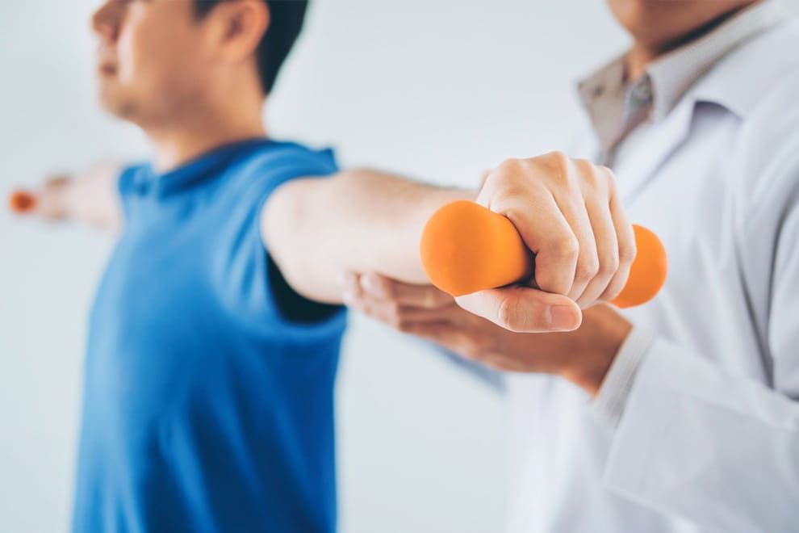

Безоплатна медична допомога для внутрішньо переміщених осіб — ваші права та можливості
Через повномасштабне вторгнення росії понад 8 млн українців стали внутрішньо переміщеними особами. Незалежно від місця проживання і реєстрації, кожен має право на медичну допомогу в однаково повному обсязі.
Це право реалізується через Програму медичних гарантій, яка покриває потреби ВПО.
💡 Без направлення можна звертатись до: гінеколога, психіатра, нарколога, фтизіатра, педіатра, стоматолога.
ВПО можуть отримати ліки безоплатно або з частковою доплатою. Програма охоплює понад 500 торгових назв для лікування найпоширеніших хронічних захворювань.
📋 Для отримання ліків необхідний е-рецепт від лікаря первинної медичної допомоги.
Після операцій, травм або тривалого лікування кожен ВПО може безоплатно пройти реабілітацію. Доступно понад 470 закладів по всій Україні з договором НСЗУ.
Щоб розпочати реабілітацію, достатньо отримати е-направлення від сімейного лікаря або лікуючого лікаря та звернутись до обраного закладу.
📞 Знайти заклад: контакт-центр НСЗУ 16-77 або сайт nszu.gov.ua
